UDN
Search public documentation:
GettingStartedWithGeometryModeKR
English Translation
日本語訳
中国翻译
Interested in the Unreal Engine?
Visit the Unreal Technology site.
Looking for jobs and company info?
Check out the Epic games site.
Questions about support via UDN?
Contact the UDN Staff
日本語訳
中国翻译
Interested in the Unreal Engine?
Visit the Unreal Technology site.
Looking for jobs and company info?
Check out the Epic games site.
Questions about support via UDN?
Contact the UDN Staff
지오메트리 모드 시작하기
문서 변경내역: Warren Marshall 작성. 홍성진 번역.
개요
시작하기
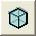
그리 하면 선택된 브러시의 모양이 달라져 새 모드에 들어갔음을 나타냅니다. 이런 식입니다:
선택하기
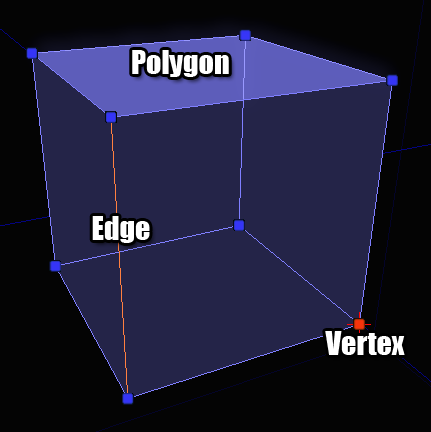
이러한 요소 모두 언리얼 에디터 내 다른 오브젝트와 비슷한 방식, 즉 단식 복식 혼합식 어떤 방식으로도 선택할 수 있습니다.편집하기
모디파이어
 모디파이어에는 두 종류, 능동형(active)과 수동형(passive)이 있습니다.
수동형 모디파이어는 뭔가를 짝지어 줘야 하는 명령입니다.
능동형 모디파이어는 그냥 누르자마자 뭔가 하는 명령입니다.
수동형 모디파이어는 프로퍼티 창 위 대화창 상단에 있는데, 보통 그 모디파이어가 하는 일에 영향을 끼치는 파라미터를 설정할 수 있기 때문입니다. 능동형 모디파이어는 대화창 하단에 있는데, 입력이나 파라미터가 필요 없는 버튼이기 때문입니다.
모디파이어에는 두 종류, 능동형(active)과 수동형(passive)이 있습니다.
수동형 모디파이어는 뭔가를 짝지어 줘야 하는 명령입니다.
능동형 모디파이어는 그냥 누르자마자 뭔가 하는 명령입니다.
수동형 모디파이어는 프로퍼티 창 위 대화창 상단에 있는데, 보통 그 모디파이어가 하는 일에 영향을 끼치는 파라미터를 설정할 수 있기 때문입니다. 능동형 모디파이어는 대화창 하단에 있는데, 입력이나 파라미터가 필요 없는 버튼이기 때문입니다.
수동형 모디파이어
편집
지오메트리 모드의 디폴트 모디파이어이며, 기본적으로 현재의 상태를 나타냅니다. 언리얼 에디터 내 보틍의 액터와 같은 방식으로 이 모드에서 선택된 것을 옮기고 회전하고 스케일 조절 가능합니다.돌출
선택된 오브젝트를 그 노멀(법선, 접선에 수직) 방향으로 밀어내어, 필요하다면 그 뒤에 지오메트리를 새로 만듭니다.프로퍼티
 Length 길이 - 각각의 돌출부를 얼마나 크게할 것인지 입니다.
Segments 분절 - 모디파이어를 적용할 때마다 돌출부를 몇 개나 만들 것인지 입니다.
Length 길이 - 각각의 돌출부를 얼마나 크게할 것인지 입니다.
Segments 분절 - 모디파이어를 적용할 때마다 돌출부를 몇 개나 만들 것인지 입니다.
예제
아래 그림은, 브러시의 맨위 폴리곤을 64 유닛 돌출시킨 것입니다:
브러시 클립
브러시 클립(잘라내기)은 브러시 조각을 잘라내거나 브러시를 여러 브러시로 빠르게 나눠볼 수 있는 방법입니다. 기본 개념은 뷰포트에 앵커(anchor, 기준점)을 둘 정의한 다음 클립 작업을 할 때, 그 선을 클리핑에 사용하는 것입니다. 얇은 철사로 치즈 덩어리를 밀어본다 생각해 보시기 바랍니다.프로퍼티
 bFlipNormal 노멀 플립(뒤집기) - 체크하면 노멀 반대 방향을 클리핑합니다.
bSplit 분할 - 체크하면 클립 선 뒷부분 지오메트리를 던져버리는 대신 브러시를 두 조각으로 나눕니다.
bFlipNormal 노멀 플립(뒤집기) - 체크하면 노멀 반대 방향을 클리핑합니다.
bSplit 분할 - 체크하면 클립 선 뒷부분 지오메트리를 던져버리는 대신 브러시를 두 조각으로 나눕니다.
예제
클립 앵커를 놓으려면 우선 2D 뷰포트에 포커스가 있는지 확인합니다. 커서를 따라다니는 하얀 상자가 보일 것입니다. 이 상자가 클립 앵커가 놓일 곳을 나타냅니다. 스페이스바를 누르면 거기에 앵커가 놓입니다. 둘째 앵커를 놓을 곳으로 마우스를 옮긴 다음 스페이스바를 다시 치면 됩니다. 그러면 이런 화면이 보입니다: 클립 앵커를 실수로 잘못 놓은 경우, ESC 키를 치면 방금 놓은 것이 제거됩니다.
"적용" 버튼(이나 엔터 키)을 누르면 선 뒷부분의 지오메트리를 잘라 버립니다. 선 앞부분은 거기서 가운데 방향을 가리키는 선으로 알 수 있습니다. 선의 방향이 중요하니 어떤 모양인지 눈에 익히시기 바랍니다. 모디파이어를 적용하면 다음과 같은 모양이 됩니다:
클립 앵커를 실수로 잘못 놓은 경우, ESC 키를 치면 방금 놓은 것이 제거됩니다.
"적용" 버튼(이나 엔터 키)을 누르면 선 뒷부분의 지오메트리를 잘라 버립니다. 선 앞부분은 거기서 가운데 방향을 가리키는 선으로 알 수 있습니다. 선의 방향이 중요하니 어떤 모양인지 눈에 익히시기 바랍니다. 모디파이어를 적용하면 다음과 같은 모양이 됩니다:
 bFlipNormal 를 체크했(거나 엔터키를 누를 때 시프트 키를 누르고 있었)다면, 선이 향하던 반대 방향에 똑같은 작업을 합니다:
bFlipNormal 를 체크했(거나 엔터키를 누를 때 시프트 키를 누르고 있었)다면, 선이 향하던 반대 방향에 똑같은 작업을 합니다:
 마지막으로 bSplit 이 선택된 경우 두 개의 브러시가 생기게 됩니다. 아래 그림은 실제 분할 결과를 확인할 수 있도록 브러시를 치워둔 것으로, 개념을 잡기에는 충분할 것입니다:
마지막으로 bSplit 이 선택된 경우 두 개의 브러시가 생기게 됩니다. 아래 그림은 실제 분할 결과를 확인할 수 있도록 브러시를 치워둔 것으로, 개념을 잡기에는 충분할 것입니다:

펜
펜 모디파이어는 자유로이 그린 2D 모양을 브러시로 변환하는 것입니다. 지오메트리 한 뭉텅이로 둘러쌀 필요가 있는 블로킹 볼륨같은 것을 만들 때 매우 좋습니다.프로퍼티
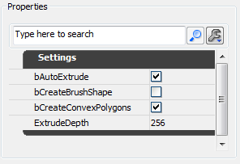
bAutoExtrude 자동 돌출 - 체크하면 그린 모양이 돌출되어 입체 브러시가 됩니다. 시트 브러시를 만들려거든 체크하지 마십시오. bCreateBrushShape 브러시 모양 만들기 - 체크하면 모디파이어 결과가 "브러시"가 아닌 "브러시 모양"이 됩니다. 이 브러시 모양은 선반(Lathe) 모디파이어용 템플릿으로 사용됩니다. bCreateConvexPolygons 컨벡스(볼록) 폴리곤 생성 - 브러시가 생성되면, 그린 모양은 (언리얼 엔진이 내부적으로 요하는 사항인) 폴리곤이 컨벡스로 남아있을 수 있도록 트라이앵글로 분해해 줘야 합니다. 이 옵션을 체크하면 트라이앵글은 가능한 한 적은 컨벡스 폴리곤으로 최적화됩니다. ExtrudeDepth 돌출 깊이 - bAutoExtrude 가 체크되면 이 필드의 값이 생성되는 브러시의 깊이를 결정합니다.예제
모디파이어는 브러시 클리핑 툴과 매우 비슷한 식으로 작동합니다. 2D 뷰포트에 스페이스바를 눌러 일련의 앵커 포인트를 떨구고 다 되었을 때 엔터키를 치면 그 모양으로 브러시가 생성됩니다. 앵커 포인트를 한 다발 떨구고 나면 이런 모양이 나올 것입니다: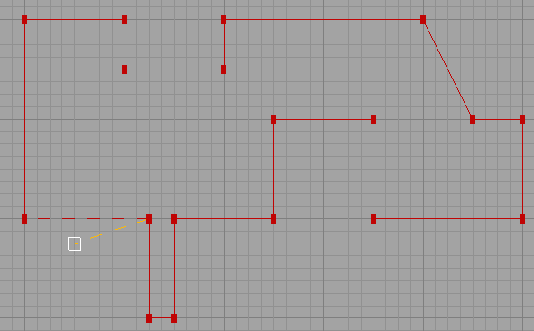
모양 그리기를 마무리할 무렵, 브러시를 만들어 내는 데는 두 가지 방법이 있습니다. 맨 처음 놓았던 앵커 포인트 위에 놓아 닫힌 모양을 이루거나, 그냥 엔터 키를 누르(면 처음과 마지막 앵커가 자동으로 연결되)는 것입니다. 엔터 키를 누르니 이런 모양이 나왔습니다: 무슨 일이 벌어졌는지 더욱 잘 알 수 있도록 결과 브러시를 3D 로 살펴본 모습입니다:
무슨 일이 벌어졌는지 더욱 잘 알 수 있도록 결과 브러시를 3D 로 살펴본 모습입니다:
 이쁘고 복잡한 브러시나 볼륨도 얼마나 쉽게 만들 수 있는지, 이 모디파이어 기능 잘 아시겠죠?
이쁘고 복잡한 브러시나 볼륨도 얼마나 쉽게 만들 수 있는지, 이 모디파이어 기능 잘 아시겠죠?
선반 (Lathe)
선반은 (펜 모디파이어로 만든) 브러시 모양을 피벗 포인트를 중심으로 선회시켜 커브 브러시를 만드는 기능입니다. 예전 2D 모양 에디터 기능같은 것입니다.프로퍼티
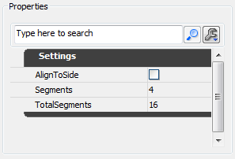
AlignToSide 측면으로 정렬 - 체크하면 브러시 결과물에 반 바퀴 더 회전시킵니다. 직접 해 보시면 확실히 아실 수 있습니다. Segments 세그먼트 - 결과 브러시를 몇 조각으로 나눌지 입니다. TotalSegments 총 세그먼트 - 전체 로테이션에 몇 조각이나 포함시킬지 입니다. Segments 필드는 조금 헛갈리긴 하지만 매우 강력한 기능을 합니다. 90 도를 돌리는 데 4 조각이 나오게 하고 싶다 칩시다. Segments 는 4 로, TotalSegments 는 16 으로 설정하면 됩니다. 어떤 식인지 아시겠죠? 90 도는 360 도의 1/4 이니, 그 비율을 유지하려면 4 세그먼트에는 총 세그먼트가 16 이 되어야 하는 것입니다.예제
이 모디파이어 사용법을 설명하기 위해서는 펜 모디파이어로 잠깐 되돌아 가야 합니다. 선반 (Lathe) 모디파이어를 사용하려면 브러시 모양을 만들어야 합니다. 그 작업은 펜 모디파이어에서 bCreateBrushShape 옵션을 체크한 상태로 그려 줘야 합니다. 그 작업을 할 때 선이 녹색으로 변하면 제대로 하고 있다는 것입니다. 마치면 이런 브러시 모양이 나옵니다: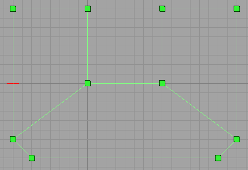
레벨에 브러시 모양은 원하는 만큼 만들어도 됩니다. BSP 지오메트리에는 전혀 영향을 끼치지 않으며, 순전히 선반 (Lathe) 모디파이어 용으로만 사용됩니다. 모양을 선택하고서 선반 (Lathe)으로 돌리려면, 몇 가지 작업을 해 줘야 합니다. 1. 브러시 모양을 선택합니다. 2. 모양 옆 어딘가에 피벗 포인트를 둡니다. 이 작업은 꼭 해줘야 하는데, 피벗 포인트가 회전 중심 역할을 하기 때문입니다. 원의 중심인거죠. 피벗 포인트를 수동으로 움직이는 방법이 몇 가지 있지만, 가장 빠른 방법은 그 지점에 커서를 두고 ALT 키를 누른 상태에서 마우스 가운데 버튼을 클릭하면 됩니다. 3. 내려보기 (탑) 뷰포트에서 모양을 내려다 보고 있도록 합니다. 무슨 소린지 지금은 애매해도 금방 명확해 집니다. 모양을 선반으로 돌릴 준비가 된 모습은 이렇습니다: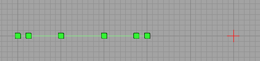
즉 모양을 내려다 보고 있고 피벗 포인트도 좋은 지점에 있으니, 바로 적용 버튼을 눌러도 될 것 같습니다. 결과는 이렇게 나옵니다: 조금 더 자세히 보자면:
조금 더 자세히 보자면:
 이런 브러시를 만드는 데 브러시 모양과 피벗을 어떻게 조합시키는지 확실히 보셨을 것입니다. 이제 브러시 모양은 레벨 다른 곳에 쓰든 지우든 자유입니다.
이런 브러시를 만드는 데 브러시 모양과 피벗을 어떻게 조합시키는지 확실히 보셨을 것입니다. 이제 브러시 모양은 레벨 다른 곳에 쓰든 지우든 자유입니다.
능동형 모디파이어
삭제
삭제는 소스 브러시에서 선택된 것은 무엇이든 지웁니다. 참고로 여러가지 것들이 의존하는 (에지나 버텍스같은) 것을 지우면, 지오메트리도 그 내용을 반영하여 접히게 됩니다.생성
생성은 오브젝트에 구멍을 뚫은 다음 다시 채워넣을 때에 요긴하게 쓰입니다. 선택된 버텍스 세트에서 새로운 폴리곤을 만듭니다.예제
폴리곤이 중간에 빠진 브러시가 있다고 칩시다. 다음과 같은 모양이죠: 구멍을 메꾸기 귀해 폴리곤을 새로 만들려면, 폴리곤을 만들 버텍스를 시계방향 순서로 선택한 다음 생성 버튼을 누르면 됩니다. 버튼을 누르기 전 이런 모습일 것입니다. (버텍스 선택 순서에 유의하세요):
구멍을 메꾸기 귀해 폴리곤을 새로 만들려면, 폴리곤을 만들 버텍스를 시계방향 순서로 선택한 다음 생성 버튼을 누르면 됩니다. 버튼을 누르기 전 이런 모습일 것입니다. (버텍스 선택 순서에 유의하세요):
 어느 버텍스부터 시작하는가는 상관없지만 시계방향 순서는 중요합니다. 반시계방향 순서로 선택한다고 뭐가 크게 잘못되는건 아니지만, 폴리곤이 반대 방향으로 생성됩니다. 플립(Flip, 뒤집기) 모디파이어를 사용하여 고쳐주면 되기는 합니다.
생성 버튼을 클릭하면 새로운 폴리곤이 얹힌 브러시가 생깁니다.
어느 버텍스부터 시작하는가는 상관없지만 시계방향 순서는 중요합니다. 반시계방향 순서로 선택한다고 뭐가 크게 잘못되는건 아니지만, 폴리곤이 반대 방향으로 생성됩니다. 플립(Flip, 뒤집기) 모디파이어를 사용하여 고쳐주면 되기는 합니다.
생성 버튼을 클릭하면 새로운 폴리곤이 얹힌 브러시가 생깁니다.

플립
플립은 선택된 폴리곤이 반대 방향을 향하도록 뒤집습니다. 버텍스를 잘못된 순서로 선택하고 폴리곤을 새로 생성했거나, 어떤 이유로든 망가진 모양의 브러시를 고치는 데 좋습니다.분할
다른 3D 프로그램에서 흔히 말하는 "ring cut"(링 컷)이나 "scalpel"(메스)같은 동작을 할 수 있습니다. 브러시 클립 모디파이어의 특수한 버전이라 생각하면 됩니다.예제
브러시에 무엇을 선택했는가에 따라 여러가지 방식으로 분할할 수 있습니다. 각각의 예제는 다음과 같습니다: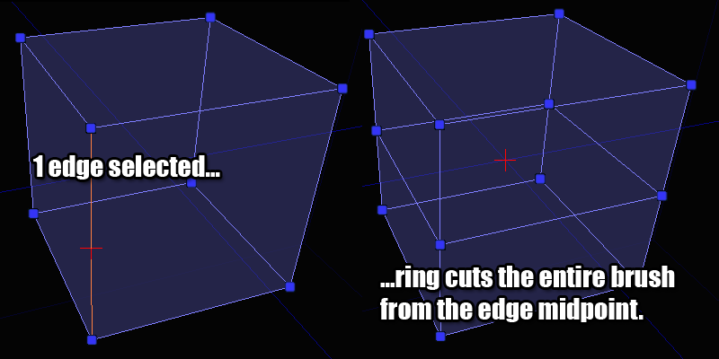
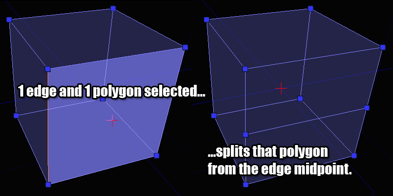
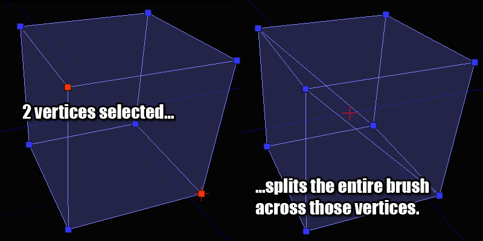
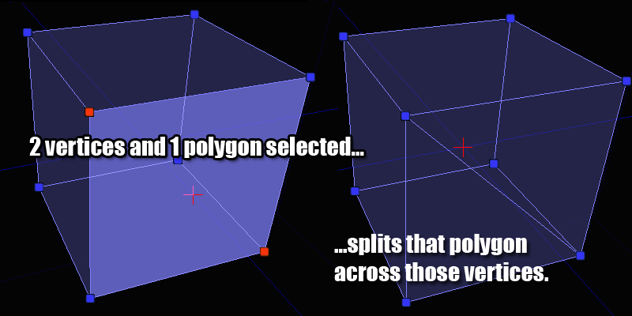
유효한 조합을 선택하지 않은 경우 분할 버튼은 활성화되지 않으니, 막힌 경우 위 그림에서 가능한 조합을 참고해 보시기 바랍니다.트라이앵글화
이 모디파이어는 오브젝트를 트라이앵글화 시키니는 데 사용합니다. 선택된 폴리곤을 트라이앵글로 분해한다는 뜻입니다. 가끔 브러시를 미세 조정하고 싶을 때 좋습니다. 아무 폴리곤도 선택하지 않은 상태에서 트라이앵글화 버튼을 누르면, 전체 브러시가 트라이앵글화 됩니다.예제
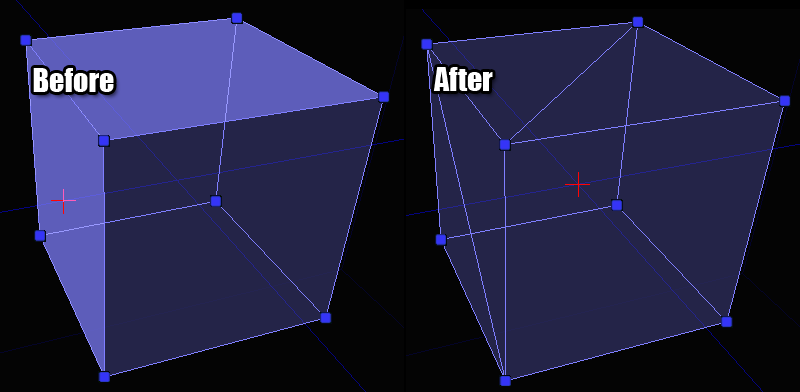
최적화
이 모디파이어는 선택한 폴리곤(이나 선택된 것이 없으면 전체 브러시)을 살펴본 다음 컨벡스 폴리곤이 될 수 있으면 폴리곤으로 합칩니다. 분할이나 트라이앵글화 작업을 많이 한 브러시에 남아도는 폴리곤을 제거하기에 좋습니다. 버텍스를 까닥 잘못 움직였을 뿐인데 에디터가 주변 폴리곤을 자동으로 트라이앵글화 시켜버린 경우를 고치는 데도 좋습니다. 모든 것을 제자리에 돌려놓고서 이 버튼만 클릭하면 브러시가 깔끔히 정리됩니다.예제

턴
이 모디파이어는 에지를 돌리는 데 사용합니다. 한 가지 제약이라면 선택된 에지의 어느 한 쪽에 있는 폴리곤이 트라이앵글이어야 한다는 것인데, 그래야 에지를 돌리는 것이 논리적으로 맞기 때문입니다. 여러 개의 에지를 한 번에 돌릴 수도 있지만, 가끔 결과가 혼동될 수 있으니 조심하시기 바랍니다.예제

결합
This modifier can be used to weld vertices together. The same effect can be had by dragging vertices on top of each other, but this allows you to weld them quickly without worrying about trying to get them all lined up manually.예제
 이 예제에서 참고할 것은, 선택 순서가 중요하다는 것입니다. 버텍스 2 가 버텍스 1 의 위치에 결합됩니다.
이 예제에서 참고할 것은, 선택 순서가 중요하다는 것입니다. 버텍스 2 가 버텍스 1 의 위치에 결합됩니다.